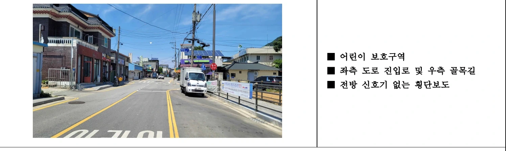

765. Hai cách lái xe nào là an toàn nhất trong tình huống sau?

- ①Dù không có người đi bộ thì cũng liên tục nhấn còi và đi qua.
- ②Phía sau xe chở hàng đang đỗ bên phải có đường hẻm nên tạm dừng lại để quan sát tình hình người đi bộ và xe cộ rồi mới tiến vào đường giao nhau.
- ③Tại vạch sang đường dành cho người đi bộ không có đèn tín hiệu giao thông nên nếu không có người đi bộ thì có thể đi chậm qua.
- ④Vì có xe đang chạy lấn vạch kẻ giữa đường ở phía trước, nên giảm tốc độ để giảm nguy cơ xảy ra tai nạn.
- ⑤Trường hợp muốn rẽ phải, dù bên phải có biển “Dừng lại” nhưng vì không có đèn tín hiệu giao thông dành cho xe nên không dừng lại mà cứ thế rẽ phải.
Xem đáp án
Đáp án
② Phía sau xe chở hàng đang đỗ bên phải có đường hẻm nên tạm dừng lại để quan sát tình hình người đi bộ và xe cộ rồi mới tiến vào đường giao nhau.
④ Vì có xe đang chạy lấn vạch kẻ giữa đường ở phía trước, nên giảm tốc độ để giảm nguy cơ xảy ra tai nạn.
Căn cứ
Những giao lộ không có tín hiệu không thể kiểm tra bên trái hoặc bên phải phải được đi vào sau khi tạm dừng và các lối qua đường không có tín hiệu trong khu vực bảo vệ trẻ em phải tạm thời dừng lại bất kể sự có mặt hay vắng mặt của người đi bộ (Luật Giao thông Đường bộ, Điều 27, Đoạn 7). Vì phía trước có xe vượt vạch giữa đường nên bạn phải giảm tốc độ để tránh tai nạn và tránh bấm còi inh ỏi mà không có lý do chính đáng. Nếu có biển “Dừng” thì phải dừng tạm thời trước khi rẽ phải.
Phần căn cứ là bản dịch máy để tham khảo.